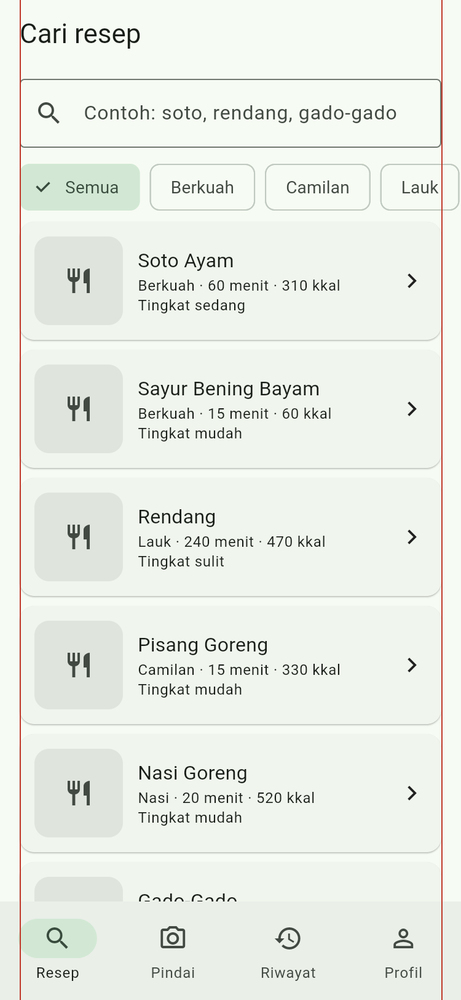
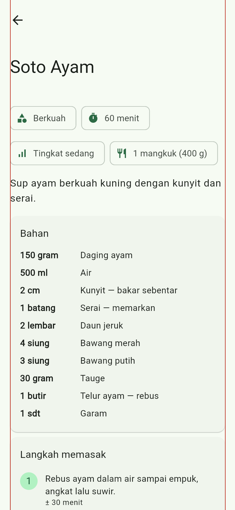
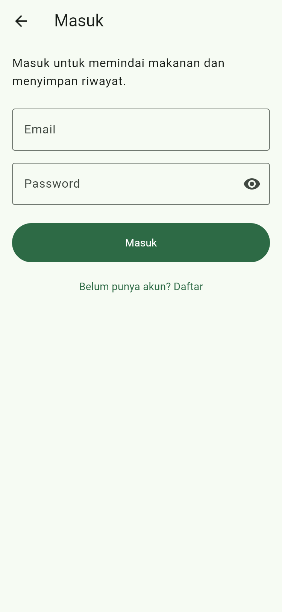
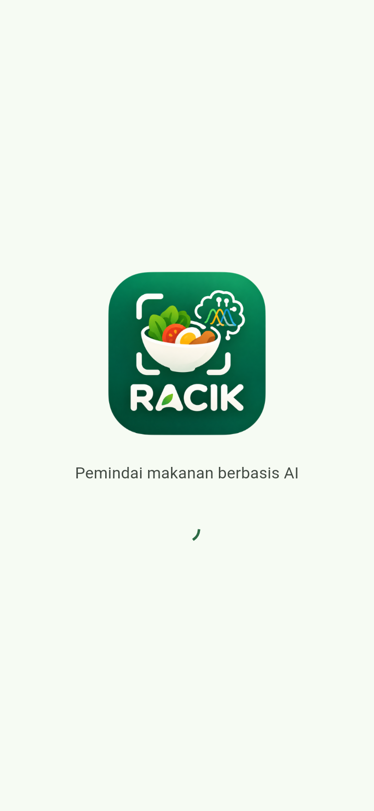
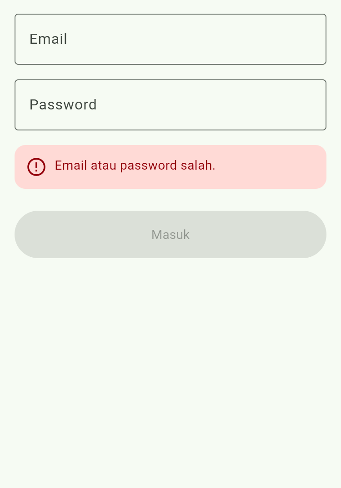
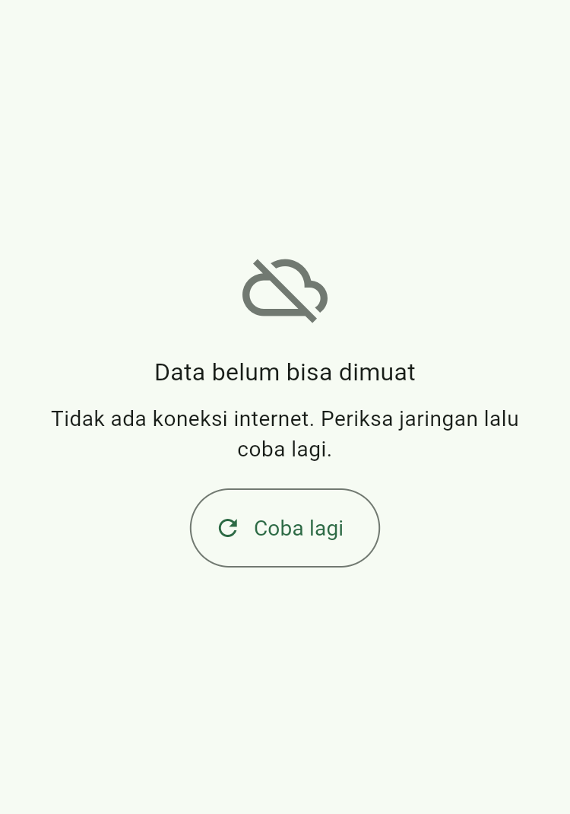

Cheatsheet Racik
Struktur proyek, layout, dan navigasi Flutter yang dibedah langsung dari kode Racik (branch uts). Tiap konsep bisa kamu cari dan coba ubah di file aslinya.
1. Peta proyek
Struktur lib/ mengikuti template praktikum PAPB. Setiap folder punya satu tugas, sehingga kamu selalu tahu harus mencari kode di mana.
Alur data satu arah
// controller/food_controller.dart
Future<void> loadFoods() async {
_loadState = LoadState.loading;
notifyListeners(); // halaman menampilkan spinner
try {
_foods = await foodService.getFoods(query: _query, category: _category);
_loadState = LoadState.loaded;
} catch (e) {
_errorMessage = friendlyError(e);
_loadState = LoadState.error;
}
notifyListeners(); // halaman menampilkan daftar / pesan error
}
// pages/food_list_page.dart
switch (controller.loadState) {
case LoadState.initial:
case LoadState.loading: return Center(child: CircularProgressIndicator());
case LoadState.error: return ErrorState(message: controller.errorMessage, ...);
case LoadState.loaded: return ListView.builder(...);
}main.dart, tanpa paket provider.2. Aturan emas layout Flutter
Seluruh sistem layout Flutter bisa diringkas jadi tiga kalimat. Kalau tampilan aneh, hampir selalu salah satu dari tiga aturan ini yang dilanggar.
Contoh di Racik: di FoodCard, Row memberi gambar lebar bebas (gambar memilih 72), lalu sisa lebar diberikan ke Expanded. Tanpa Expanded, teks nama resep yang panjang akan meminta lebar lebih dari yang tersedia, sehingga muncul error overflow bergaris kuning-hitam.
3. Skala jarak (AppSpacing)
Semua padding dan SizedBox di Racik memakai satu skala kelipatan 4 dari lib/core/spacing.dart. Dengan begitu, jarak di setiap halaman pasti konsisten, dan mengubah satu nilai cukup di satu tempat.
| Token | Nilai | Dipakai untuk | |
|---|---|---|---|
AppSpacing.xs | 4 | Jarak atas-bawah tiap baris bahan dan nutrisi; margin atas-bawah kartu | |
AppSpacing.sm | 8 | Antarchip, judul kartu → isi, tombol → tautan di bawahnya | |
AppSpacing.md | 12 | Gambar → teks di kartu resep, antarbagian di detail resep | |
AppSpacing.lg | 16 | Tepi semua halaman, isi kartu, antarkolom isian | |
AppSpacing.xl | 24 | Antarbagian besar, sebelum tombol utama | |
AppSpacing.xxl | 32 | Ruang lega di tengah layar (splash, state kosong), bawah halaman detail |
class AppSpacing {
static const double lg = 16; // tepi halaman, isi kartu
static const page = EdgeInsets.all(lg);
}
// pemakaian
ListView(padding: AppSpacing.page, children: [...])
const SizedBox(height: AppSpacing.xl)Card punya margin bawaan 4 di semua sisi, sehingga kartu menjorok ke dalam (16 + 4 = 20). Di lib/core/theme.dart margin kartu diganti jadi atas-bawah saja, supaya tepi kiri kartu tepat di 16 seperti elemen lain.cardTheme: const CardThemeData(
margin: EdgeInsets.symmetric(vertical: AppSpacing.xs),
),4. Kerangka setiap halaman
Setiap halaman Racik dimulai dari Scaffold, yang menyediakan “slot” standar halaman Material.
MainPage memakai IndexedStack untuk empat tab (Resep, Pindai, Riwayat, Profil). Semua tab tetap hidup di belakang layar, jadi kata kunci pencarian tidak hilang saat kamu pindah tab lalu kembali.
body: IndexedStack(index: _selectedIndex, children: _pages),
bottomNavigationBar: NavigationBar(
selectedIndex: _selectedIndex,
onDestinationSelected: _onTabSelected,
destinations: const [ ... ],
),5. Bedah layar
Garis merah di screenshot daftar dan detail ada di x = 16 dan x = 359, yaitu tepi halaman. Perhatikan bagaimana kolom pencarian, chip, dan kartu semuanya menempel di garis yang sama.
Daftar resep — pages/food_list_page.dart

Kenapa ada SizedBox(height: 48)? ListView horizontal di dalam Column tidak tahu tingginya. SizedBox memberinya tinggi pasti.
Kenapa ada Expanded? ListView vertikal ingin setinggi mungkin (tak hingga). Expanded membatasinya ke sisa tinggi di bawah chip.
Kartu resep — widget/food_card.dart
Card(
child: InkWell(
onTap: onTap,
child: Container(
padding: const EdgeInsets.all(AppSpacing.md),
child: Row(
children: [
FoodImage(url: food.imageUrl, size: 72),
const SizedBox(width: AppSpacing.md),
Expanded(child: Container(child: Column(...))), // isi sisa lebar
const Icon(Icons.chevron_right),
],
),
),
),
)Detail resep — pages/food_detail_page.dart

Sliver adalah potongan isi yang bisa digulir bersama-sama. SliverAppBar.large membuat judul “Soto Ayam” besar di atas, lalu menempel kecil di app bar saat halaman digulir.
Wrap vs Row: chip kategori, waktu, tingkat, dan porsi tidak muat di satu baris. Row akan overflow, sedangkan Wrap otomatis memindahkan chip ke baris berikutnya.
Masuk & Daftar — pages/login_page.dart

Kenapa ListView, bukan Column? Saat keyboard muncul, ruang layar menyempit. Column akan overflow, sedangkan ListView bisa digulir.
Polanya: 16 antarkolom isian, 24 sebelum tombol utama, 8 sebelum tautan kecil. Halaman Daftar memakai pola yang sama.
Splash & state kosong — pages/splash_page.dart, widget/state_views.dart

mainAxisSize: MainAxisSize.min membuat Column hanya setinggi isinya. Tanpa itu, Column memenuhi seluruh tinggi layar dan isinya menempel di atas, bukan di tengah.
EmptyState (layar “Masuk untuk memindai makanan”, “Segera hadir”) memakai pola yang sama, ditambah SingleChildScrollView supaya tidak overflow di HP kecil.
6. Tiga pola Row yang dipakai berulang
A. Label kiri, nilai kanan — NutritionCard
Row(children: [
Expanded(child: Text('Protein')), // mendorong nilai ke kanan
Text('22 g'),
])B. Kolom lebar tetap + sisa — IngredientList
Row(crossAxisAlignment: CrossAxisAlignment.start, children: [
SizedBox(width: 96, child: Text('150 gram')), // takaran selalu sejajar
Expanded(child: Text('Daging ayam')),
])C. Penanda + teks banyak baris — StepList
Row(crossAxisAlignment: CrossAxisAlignment.start, children: [ // bulatan nomor tetap di atas
CircleAvatar(radius: 14, child: Text('1')),
const SizedBox(width: AppSpacing.md),
Expanded(child: Container(child: Column(children: [instruksi, durasi]))),
])Sumbu: di Row, main axis = horizontal dan cross axis = vertikal. Di Column sebaliknya. crossAxisAlignment.start pada Row berarti “rata atas”.
7. Kamus widget layout
| Widget | Fungsinya | Contoh di Racik |
|---|---|---|
Container | Kotak serbaguna: padding, margin, warna, ukuran, dekorasi | Pembungkus setiap Row/Column (konvensi praktikum) |
Padding | Hanya memberi jarak di sekeliling anak | Kolom pencarian, jarak antarchip |
SizedBox | Ukuran pasti, atau jarak kosong antarwidget | SizedBox(height: 48) untuk chip, jarak antarisian |
Row / Column | Menyusun anak mendatar / menurun | Isi kartu resep / isi kartu bahan |
Expanded | Anak Row/Column mengambil sisa ruang | Teks di FoodCard, ListView di FoodListPage |
Wrap | Seperti Row, tetapi pindah baris saat penuh | Chip info di detail resep |
Center | Menaruh anak di tengah ruang yang ada | Splash, state kosong |
SafeArea | Menjauhkan isi dari notch / status bar | Halaman Masuk, Daftar, Setup |
ListView | Daftar yang bisa digulir (semua anak dibuat sekaligus) | Formulir Masuk/Daftar, Profil |
ListView.builder | Daftar panjang; item dibuat saat terlihat saja | Daftar resep |
SingleChildScrollView | Satu anak yang boleh digulir bila kepanjangan | EmptyState |
CustomScrollView + Sliver | Gabungan app bar dan daftar yang menggulir bersama | Detail resep |
IndexedStack | Menumpuk halaman, hanya satu yang tampil, semuanya tetap hidup | Empat tab MainPage |
Card | Permukaan bersudut membulat dengan bayangan | Kartu resep, bahan, langkah, nutrisi |
ClipRRect | Memotong anak dengan sudut membulat | Gambar di FoodImage |
AspectRatio | Menjaga rasio lebar : tinggi | Foto resep 16 : 9 di detail |
8. Container vs Padding vs SizedBox
Ketiganya sering bisa saling menggantikan. Aturan praktis di Racik:
| Butuh… | Pakai |
|---|---|
Membungkus Row / Column | Container, wajib menurut konvensi praktikum. Kalau butuh jarak, isi properti padding-nya |
| Jarak di sekeliling widget lain (TextField, Chip) | Padding |
| Jarak kosong di antara dua widget | SizedBox(height: …) atau SizedBox(width: …) |
| Ukuran pasti | SizedBox(width: …, height: …) |
| Warna latar, border, sudut membulat | Container(decoration: BoxDecoration(...)) atau Card |
// Konvensi praktikum: Row/Column selalu di dalam Container
Container(
padding: const EdgeInsets.all(AppSpacing.lg),
child: Column(
crossAxisAlignment: CrossAxisAlignment.start,
children: [ ... ],
),
)Container tanpa properti itu mubazir (avoid_unnecessary_containers). Karena konvensi praktikum mewajibkannya, aturan itu dimatikan di analysis_options.yaml.9. Navigasi & routing
Racik punya dua cara pindah halaman, dan keduanya bekerja berbeda.
_selectedIndex lewat setState. Bukan routing: tidak ada tumpukan, dan tombol Back tidak kembali ke tab sebelumnya.push menaruh kartu di atas, sedangkan Back atau pop mengambil kartu teratas.Empat tab di MainPage
| Index | Tab | Halaman | Saat tamu (belum login) |
|---|---|---|---|
| 0 | Resep | FoodListPage | Bisa dipakai penuh |
| 1 | Pindai | ScanPage | Ajakan masuk (LoginRequired) |
| 2 | Riwayat | HistoryPage | Ajakan masuk |
| 3 | Profil | ProfilePage | Ajakan masuk |
Sembilan perpindahan lewat Navigator
| No | Dari → Ke | Perintah | File |
|---|---|---|---|
| 0 | Aplikasi dibuka → SplashPage | home: di MaterialApp | main.dart |
| 1 | SplashPage → MainPage | pushReplacement (fade) | splash_page.dart |
| 2 | Kartu resep → FoodDetailPage | push | food_list_page.dart |
| 3 | Tombol “Masuk” di tab tamu → LoginPage | push | widget/state_views.dart |
| 4 | Tautan “Daftar” di tab tamu → RegisterPage | push | widget/state_views.dart |
| 5 | LoginPage → RegisterPage | pushReplacement | login_page.dart |
| 6 | Login berhasil → kembali ke MainPage | popUntil(route.isFirst) | login_page.dart |
| 7 | Daftar berhasil → kembali ke MainPage | popUntil(route.isFirst) | register_page.dart |
| 8 | Daftar perlu konfirmasi email → dialog → LoginPage | showDialog, lalu pop, lalu pushReplacement | register_page.dart |
Logout tidak memakai Navigator: ListenableBuilder di tab Profil langsung menggambar ulang dirinya menjadi ajakan masuk. SetupPage (tampil tanpa env.json) adalah aplikasi terpisah yang tidak pernah berpindah halaman.
Arti tiap perintah
| Perintah | Yang terjadi pada tumpukan | Dipakai saat |
|---|---|---|
push | Kartu baru ditaruh di atas; Back kembali ke halaman sebelumnya | Membuka detail, membuka halaman Masuk |
pushReplacement | Kartu teratas diganti; halaman lama hilang | Splash → Main (Back tidak kembali ke splash), Masuk ↔ Daftar |
popUntil(route.isFirst) | Buang semua kartu sampai tersisa yang paling bawah | Setelah login/daftar berhasil |
pop | Buang satu kartu teratas | Menutup dialog, tombol Back |
Contoh isi tumpukan
// Simpan Navigator SEBELUM await, lalu cek mounted setelahnya
final navigator = Navigator.of(context);
final success = await auth.login(_email.text, _password.text);
if (!mounted) return;
if (success) navigator.popUntil((route) => route.isFirst);10. Error: tampilan di aplikasi & error layout
Ada dua jenis “error” yang perlu dibedakan: error untuk pengguna (misalnya password salah atau internet mati) dan error layout yang muncul di konsol saat kamu menyusun widget.
10A. Tampilan error di aplikasi — satu aturan, dua widget
| Situasi | Widget | Isi | Contoh di Racik |
|---|---|---|---|
| Aksi di form gagal | InlineError | Ikon + pesan di kotak errorContainer, tepat di atas tombol utama | Masuk, Daftar |
| Halaman gagal memuat data | ErrorState | Ikon + judul + pesan + tombol “Coba lagi”, di tengah layar | Daftar resep |
| Isian form belum benar | validator di TextFormField | Teks merah bawaan di bawah kolom isian | Email, Password, Username |


// widget/state_views.dart — dipakai di semua form
Container(
padding: const EdgeInsets.all(AppSpacing.md),
decoration: BoxDecoration(
color: scheme.errorContainer,
borderRadius: BorderRadius.circular(12),
),
child: Row(crossAxisAlignment: CrossAxisAlignment.start, children: [
Icon(Icons.error_outline, color: scheme.onErrorContainer),
const SizedBox(width: AppSpacing.sm),
Expanded(child: Text(message, style: TextStyle(color: scheme.onErrorContainer))),
]),
)
// pages/login_page.dart
if (_error != null) ...[
const SizedBox(height: AppSpacing.lg),
InlineError(message: _error!),
],
const SizedBox(height: AppSpacing.xl),
FilledButton(...)friendlyError() di core/errors.dart. Dengan begitu “Email atau password salah.” tampil sama di mana pun.10B. Error layout saat coding & obatnya
| Gejala & pesan di konsol | Penyebab | Obat | Contoh di Racik |
|---|---|---|---|
Overflow (garis kuning-hitam)A RenderFlex overflowed by … pixels on the right | Isi Row lebih lebar dari layar | Bungkus teks dengan Expanded, atau ganti Row dengan Wrap | FoodCard, chip detail resep |
Daftar tanpa batas tinggiVertical viewport was given unbounded height | ListView di dalam Column | Bungkus ListView dengan Expanded | Daftar resep |
Daftar horizontal tanpa tinggiHorizontal viewport was given unbounded height | ListView horizontal di dalam Column | Beri tinggi pasti dengan SizedBox(height: …) | Chip kategori |
Form tertutup keyboardA RenderFlex overflowed by … pixels on the bottom | Isi form memakai Column yang tidak bisa digulir | Ganti dengan ListView di dalam SafeArea | Masuk, Daftar |
| Isi tidak di tengah tidak ada pesan di konsol | Column memenuhi seluruh tinggi layar | Center + mainAxisSize: MainAxisSize.min | Splash, EmptyState |
| Kartu tidak sejajar tidak ada pesan di konsol | Margin bawaan Card 4 di semua sisi | Atur cardTheme.margin di tema (bagian 3) | Kartu resep, bahan, nutrisi |
11. Checklist sebelum menambah halaman baru
- Mulai dari
Scaffold; pakaiSafeAreabila tidak adaAppBar. - Tepi halaman memakai
AppSpacing.page(16), tidak ada angka padding lepas. - Semua jarak diambil dari
AppSpacing(kelipatan 4). - Setiap
RowdanColumndibungkusContainer. - Teks yang bisa panjang di dalam
RowdibungkusExpanded. - Daftar di dalam
ColumndibungkusExpandedatau diberi tinggi pasti. - Halaman berisi formulir memakai
ListView, bukanColumn. - Isi di tengah layar:
Center+Column(mainAxisSize: MainAxisSize.min). - Error di form memakai
InlineError; halaman yang gagal memuat data memakaiErrorState. - Cek di layar sempit (375 px) dan dengan keyboard terbuka.